Le damos click en el botón de nuevo lo cual nos habilitará el espacio para poder ingresar información.
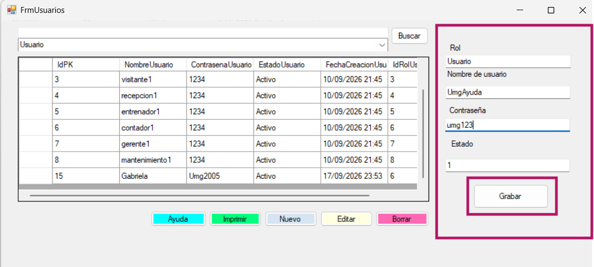
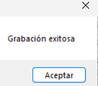
Insertamos la información de usuario que deseamos agregar (Rol, Nombre usuario, Contraseña, Estado) y le damos click al botón de grabar para que se guarde correctamente. Nos mostrará un mensaje de Grabación exitosa.
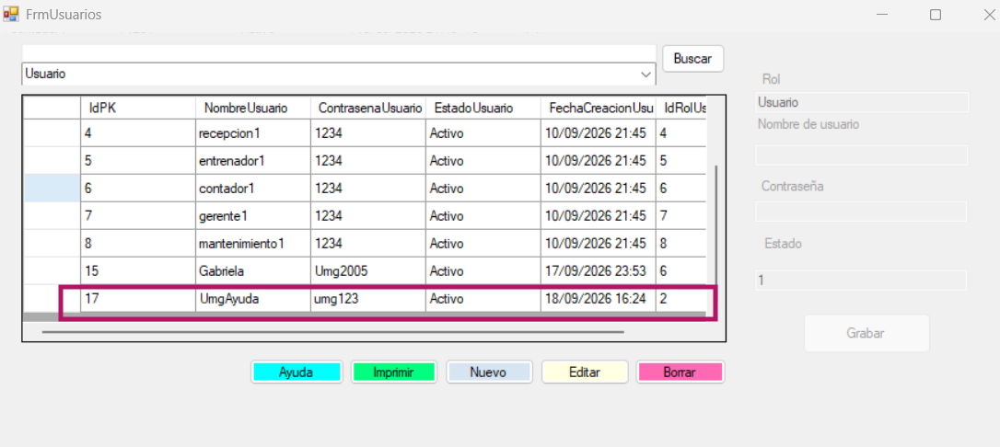
Se agrega de manera correcta en la tabla.
Editar Usuario
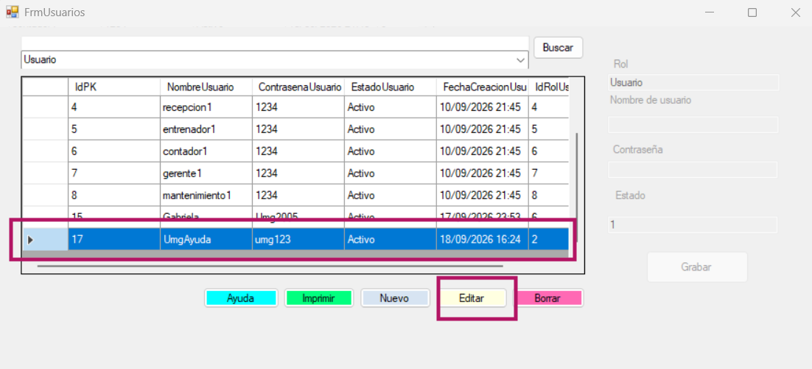
Debemos de seleccionar la fila que deseamos editar y luego seleccionar el botón de editar, lo cual nos habilitará el espacio para poder ingresar información.
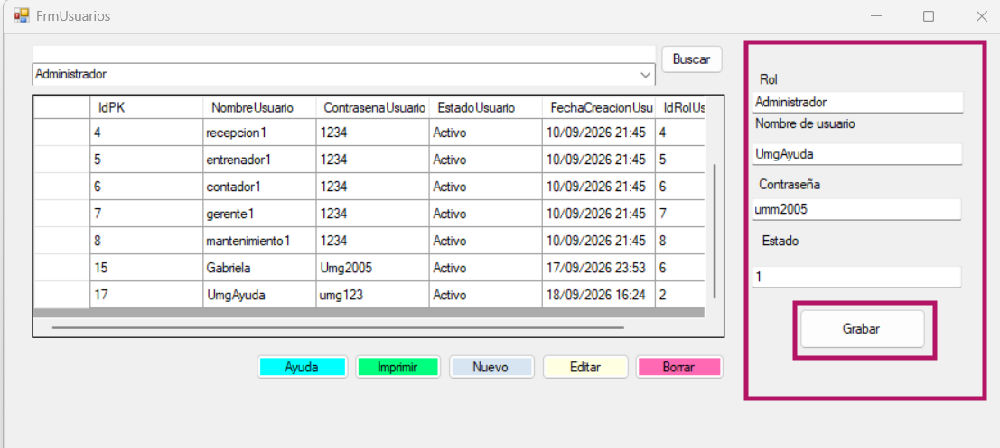
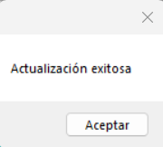
Cambiamos la información de usuario que deseamos actualizar (Rol, Nombre usuario, Contraseña, Estado) y le damos click al botón de grabar para que actualice de forma correcta y se guarde en la tabla.
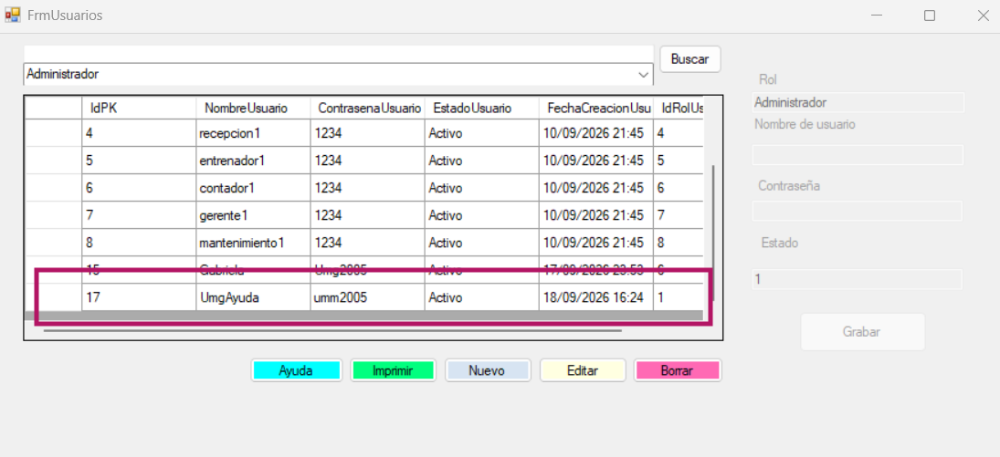
Se actualiza de manera correcta en la tabla.
Eliminar usuario
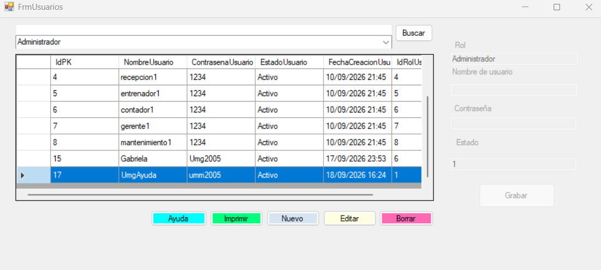
Seleccionamos la fila del usuario que deseamos eliminar.
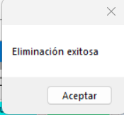
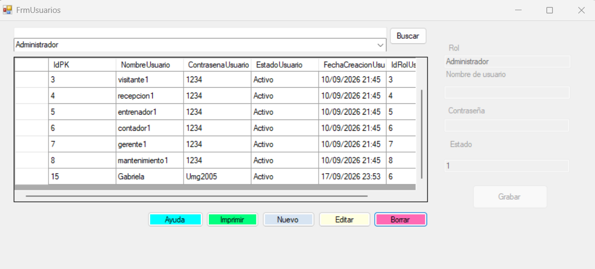
Seleccionamos el botón borrar y se elimina de forma exitosa en la tabla.
Generar reporte
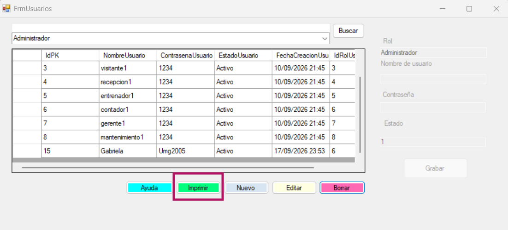
Seleccionamos el botón de imprimir.
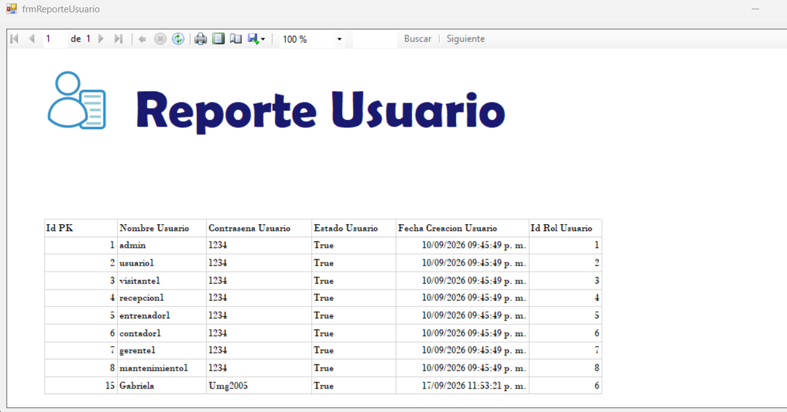
Nos genera un reporte de los datos que se encuentran dentro de la tabla.
Buscar y filtrar usuario
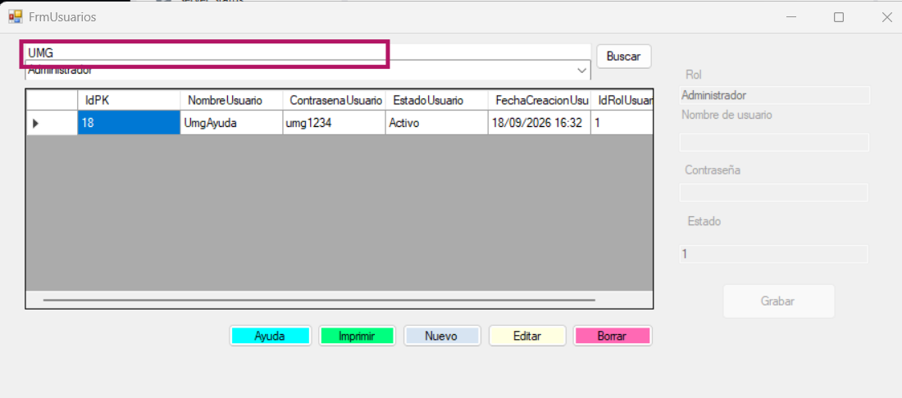
Si se desea buscar un usuario en específico, se puede buscar mediante la barra, escribiendo el nombre de usuario.
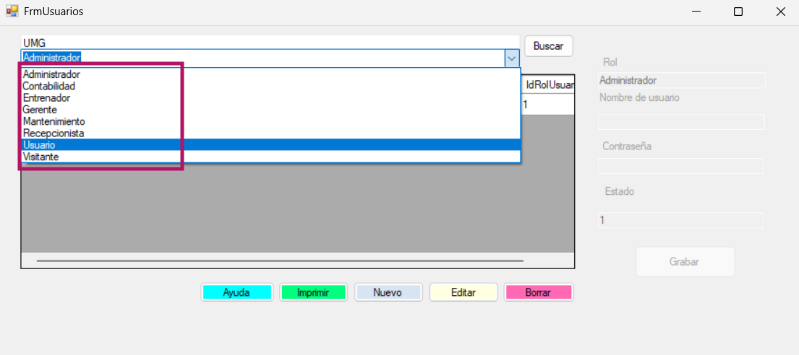
Y si se desea filtrar por rol de usuario se busca en el combobox.